mysql架构
结构
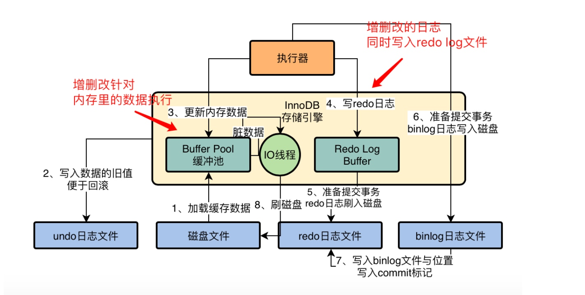
buffer pool
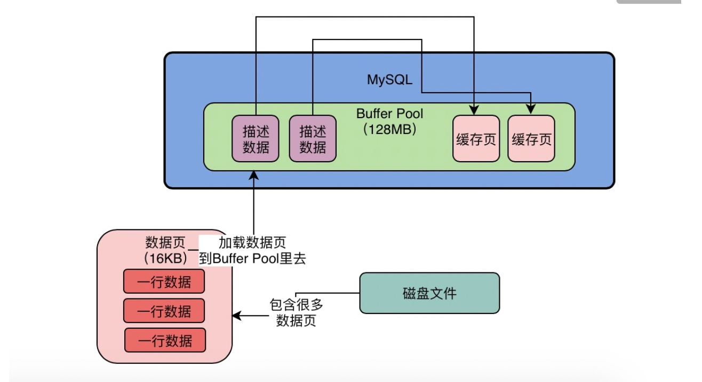
缓存页
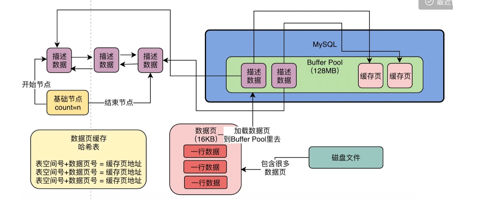
LRU链表
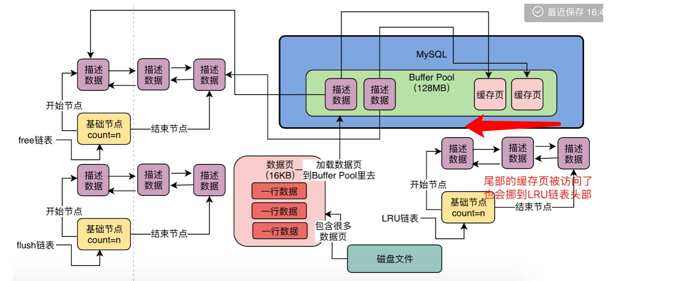
冷热分离
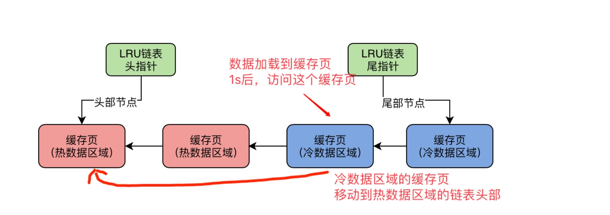
- LRU链表的热数据区域的访问规则被优化了一下，即你只有在热数据区域的后3/4部分的缓存页被访问了，才会给你移动到链表头部去。
刷盘
- 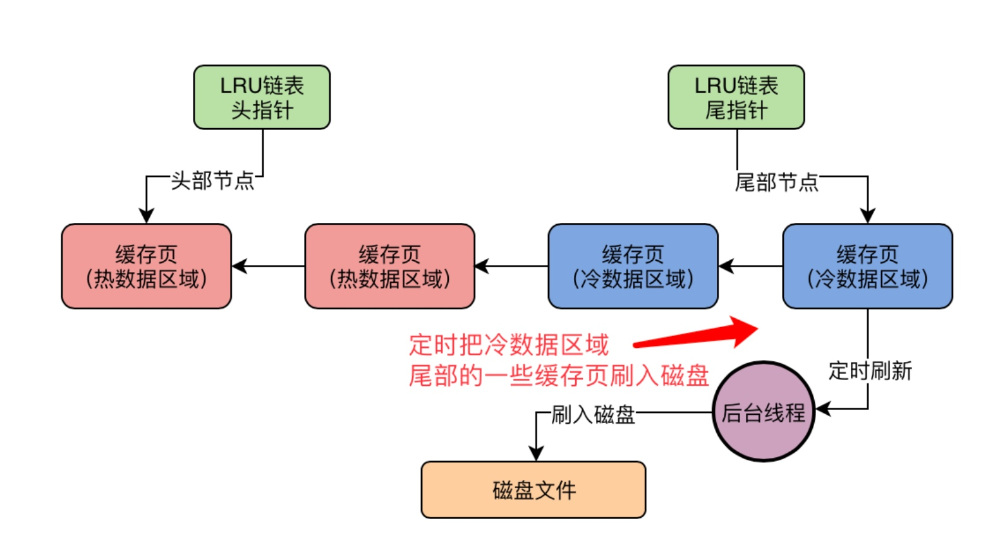
- LRU链表定期把冷数据域的尾部定期刷入磁盘
- 把Flush 链表中的一些缓存页定时刷入磁盘
多个buffer pool优化
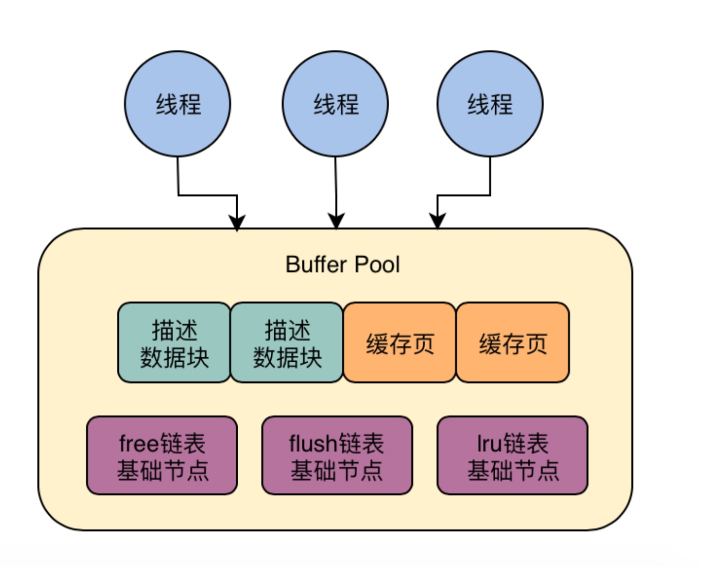

生命的意义是成为你自己！
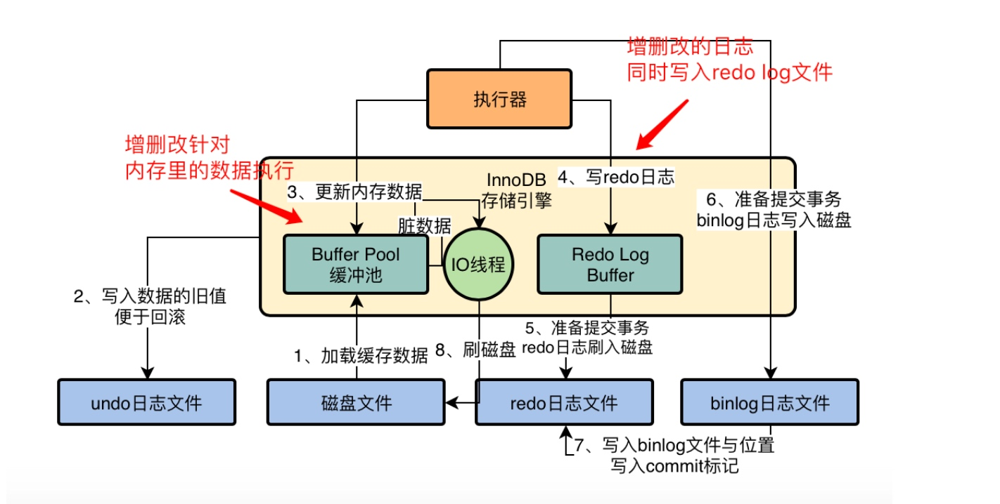
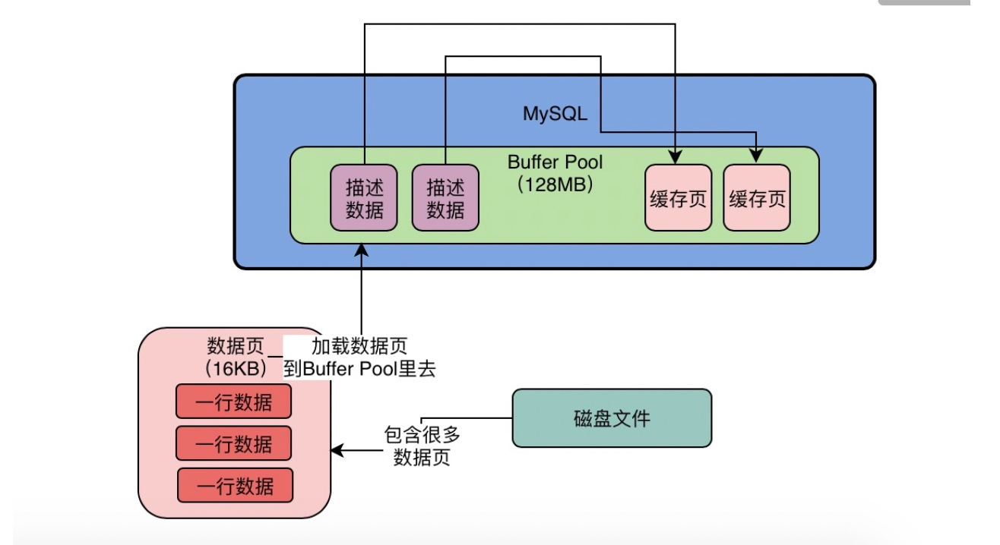
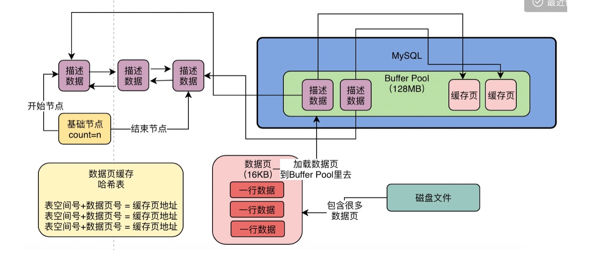
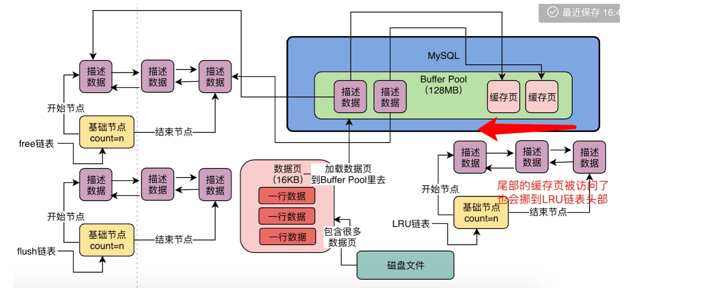
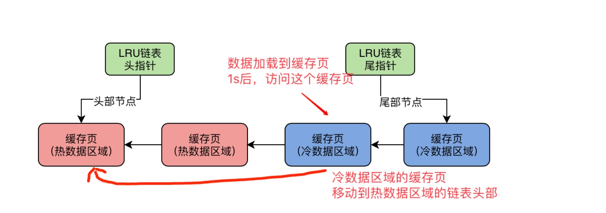
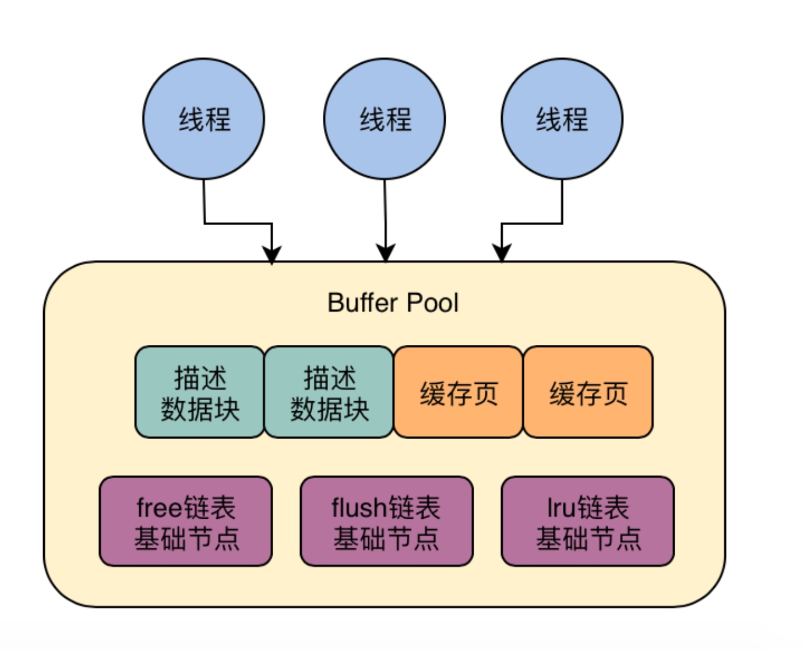
Pushconsumer 核心参数详解2
Push Consumer 消费模式集群模式
Push Consumer 消费模式-广播模式
消息存储核心-偏移量 offset
集群模式- RemoteBrokeroffsetstoref 解析
广播模式- LocalFileOffsetstore 解析